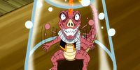

Macao is initially portrayed as a slim, mildly muscular man of average height with short, straight, slicked back dark blue hair. He has linear dark eyebrows, dark eyes, and a prominent nose with a flat, rectangular front. The lower part of his face is covered in quite a large amount of stubble, which includes a thin mustache. He is considered to be quite attractive amongst woman. When he was younger, Macao had longer, thicker, spikier hair, and quite a bit less facial hair. Macao's guild mark is located on his right bicep, positioned just below his shoulder. However, during the seven years following the Team Tenrou's disappearance, the stress of managing Fairy Tail has affected Macao, as, after the timeskip, Macao appears much older than he actually is; he now sports much sharper facial features, among which include excess wrinkles, a receding hairline, and an extremely prominent mustache. Macao's initial outfit consisted of a knee-length white jacket, often kept open, with a wide, dark purple collar and matching edges, with the sleeves kept rolled up. The sleeves of the simple, dark shirt he wears underneath this jacket are visible sprouting from the latter's own sleeves, and reach down below his elbows. He dons brown, pinstriped pants held up by a lighter-colored belt bearing a snake-like pattern, with a simple, square-shaped buckle, partially obscured by his shirt, and a very distinctive pair of shoes, adorned with a leopard pattern. Around his neck Macao wears a large, serpentine necklace, which is held up by a chain. While his attire seems to change on occasion, Macao's signature jacket, necklace and shirt remain ever-present. In his youth, Macao donned a much simpler attire, including a dark shirt with forearm length sleeves, often paired with lighter-colored pants, either plain or rectangular-patterned, and dark shoes. Macao was also seen with a small chain wrapped around his right wrist. Following the timeskip, Macao's choice of attire changes quite drastically. He still dons a long, light-colored jacket with darker edges, sporting a large and high collar and dark cuffs reaching down to his wrists, which is now paired by a light vest under it, held closed by three round buttons, worn over a simple dark shirt. Macao's pants are dark and plain, however, his shoes remain intricately designed, with this pair in particular being designed with clashing light and dark designs.
However, following the disappearance of the Team Tenrou, Macao takes on a much darker, somber personality. Macao is much more irritable and depressed, due in part to the pressures of running the then-failing Fairy Tail, and is greatly saddened by how his once cheerful son has not smiled since Tenrou Island's destruction. However, he maintains his love and concern for his guild, and tries everything he can to maintain discipline among its members, silently enduring the abuse that the much stronger Twilight Ogre Guild gives them instead of violently lashing out. As the Master of Fairy Tail, Macao personally sees that every new person that comes to Fairy Tail is background checked, due to the guild having been infiltrated by a member of the Magic Council in the past. He researched Michelle when she came to guild claiming herself to be a relative of Lucy. Even though his research into Michelle's background was correct (she was proven to be a member of the Lobster family), Macao desired more information, so he requested that Gildarts and Laki investigate the Lobster Plantation. During the course of their investigation, the two Fairy Tail Mages found the real, albeit comatose, Michelle Lobster, proving Macao's suspicions to be right.
In the year X781, Macao's wife divorced him because he was too focused on his work. Since he hated to have such a common family environment, he began dating a younger girl, though her face is described to look pretty common. At some other unspecified point in time, he taught Natsu how to manipulate the properties of his Magic so that he could perform feats such as grabbing objects with fire, and not burning them when he does so. It wouldn't be until his battle with Erigor that Natsu would understand what he meant and accomplish the feat by grappling onto a bridge to save himself from falling into a ravine. When Mirajane first joined the guild, Macao and Wakaba explained to Erza that despite the girl's siblings fitting in, Mirajane herself never spoke or smiled.
Purple Flare (Pāpuru Furea): This Caster Magic is a variation of Fire Magic and allows Macao to create a specific purple fire: one that cannot be extinguished by wind or water. This Magic, aside from the basic properties of fire, can also have the properties of solid matter. Macao can conjure this type of fire from various parts of his body. Macao has shown the ability to use this Magic in many ways, including binding and trapping. Offensively, Purple Flare can be used in the shape of bullets or beams.
Transformation Magic (変身魔法 Henshin Mahō): Although not used often, Macao has shown himself to be extremely skilled with Transformation Magic. When Erza Scarlet was arrested by the Magic Council, Natsu Dragneel wanted to pursue her, prompting Macao to transform into a lizard and pretend to be Natsu so that he could purse Erza without trouble. While transformed, he was even able to fool Mirajane Strauss, a transformation specialist.